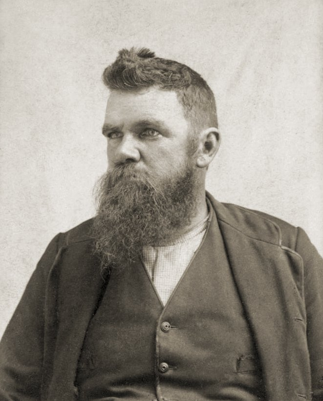
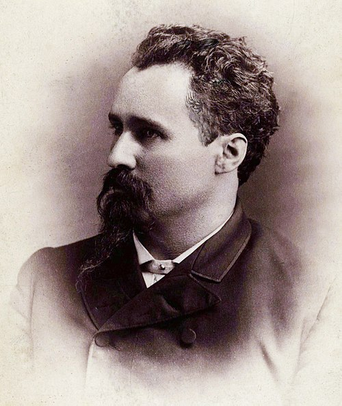
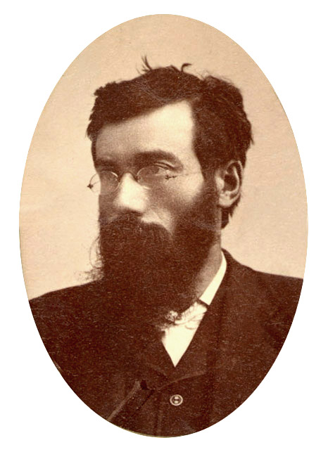
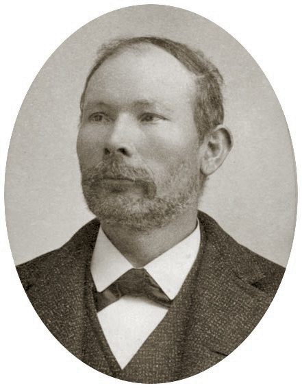
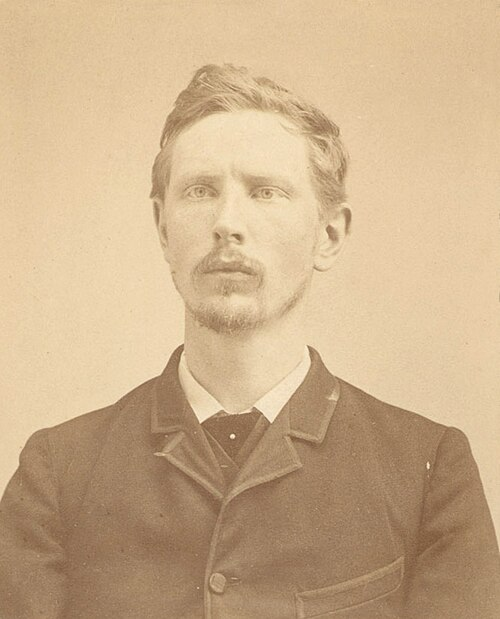
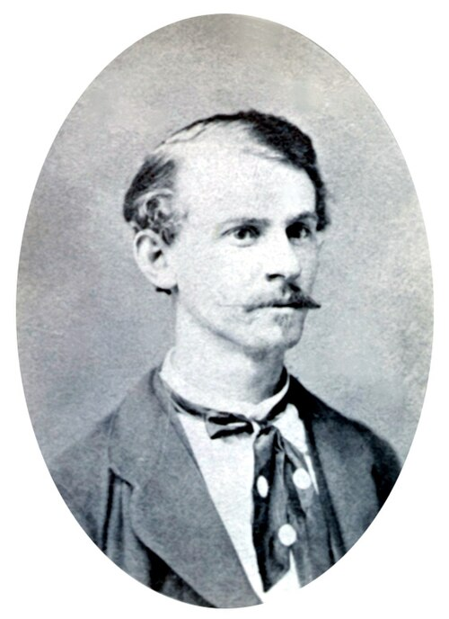
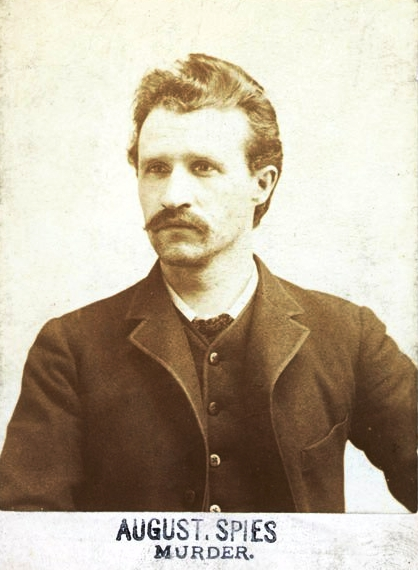
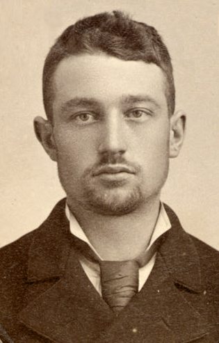
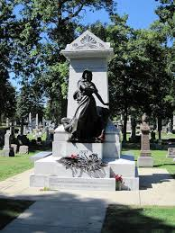

Conoce a algunos de los personajes más influyentes en la historia de los trabajadores.
Detrás de las grandes conquistas laborales, existen nombres y rostros que pagaron el precio más alto por la dignidad de las futuras generaciones. Tras los incidentes de Haymarket, el sistema judicial de Illinois no buscó justicia, sino una lección de escarmiento. En esta sección, profundizamos en la vida y el legado de los ocho líderes sindicales que enfrentaron un juicio cargado de prejuicios y sin pruebas reales.
A continuación, presentamos a los Mártires de Chicago: hombres de distintas nacionalidades y oficios, unidos por una misma causa, cuyas últimas palabras aún resuenan en la historia del movimiento obrero mundial."

Obrero textil y predicador laico. Estaba hablando en el estrado cuando la policía intervino en la plaza. Su condena a muerte fue conmutada (cambiada) por cadena perpetua, y años más tarde fue indultado.

Vendedor y organizador sindical. Fue el único que no fue sentenciado a muerte originalmente; recibió una condena de 15 años de trabajos forzados. Fue indultado junto a Fielden y Schwab tras 7 años de prisión.

Tipógrafo y coeditor del periódico de Spies. Al igual que Fielden, su sentencia de muerte fue cambiada por cadena perpetua. Finalmente fue liberado en 1893 cuando el juicio fue declarado injusto.
Last updated 3 mins ago
Tipógrafo de oficio. Al igual que Parsons, ni siquiera estaba presente en la Plaza Haymarket al momento del incidente. Fue condenado únicamente por sus ideas políticas y su activismo sindical.

Tipógrafo y periodista. Fue acusado de haber impreso los volantes que convocaban a la reunión en Haymarket. Murió gritando: "¡Este es el momento más feliz de mi vida! ¡Viva la anarquía!".

Exsoldado y brillante orador. Aunque no estaba en la plaza al estallar la bomba, se entregó voluntariamente para ser juzgado junto a sus compañeros. Era un ferviente defensor de la jornada de 8 horas.

Periodista y director del periódico obrero Arbeiter Zeitung. Fue el orador principal el día de la revuelta...

Carpintero de oficio. Fue el más joven de los acusados...
El Monumento a los Mártires de Haymarket (Haymarket Martyrs' Monument) no es solo una obra de arte, es uno de los símbolos más potentes del movimiento obrero mundial. Está ubicado en el Cementerio Forest Home en Forest Park, Illinois (un suburbio de Chicago).

Mira cómo estos eventos cambiaron las leyes laborales globales.
Volver al inicio